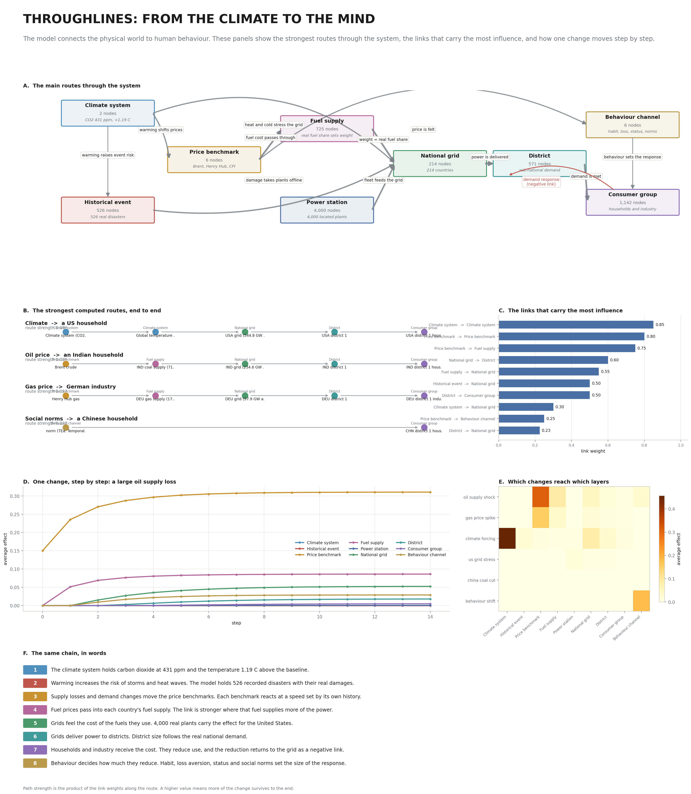

The World Energy Model: Structure, Weights, and Behaviour
Andrew Silvestri — July 2026
This report describes a model of the world energy system. The model has 7,192
nodes and 13,826 weighted links. It shows how a change at one point in the
system moves to all other points.
This report uses Simplified Technical English. Sentences are short. Each
sentence gives one fact.
1. What the model does
The model answers one question: **if something changes here, what changes
elsewhere, by how much, and how soon?**
A node is one part of the system. Examples are a price benchmark, a national
grid, a power station, a household group, or a recorded disaster.
A link connects two nodes. Each link has a weight. The weight says how strongly
a change at the first node moves the second node.
You give the model a change at one or more nodes. The model then calculates the
effect at every other node.
2. What the model contains
| Node type | Count | What one node is |
|---|---|---|
| Power station | 4,000 | One real United States plant, with its coordinates |
| Consumer group | 1,142 | Households or industry in one district |
| Fuel supply | 725 | One fuel in one country |
| District | 571 | One part of a national grid |
| Historical event | 526 | One recorded disaster, with its real damage cost |
| National grid | 214 | The power system of one country |
| Price benchmark | 6 | One traded price, such as Brent crude |
| Behaviour channel | 6 | One psychological effect on demand |
| Climate system | 2 | Carbon dioxide level and temperature anomaly |
| **Total** | **7,192** |
3. Where the numbers come from
No parameter is invented. Each node records its source.
| Source | What it gives the model | Size |
|---|---|---|
| Energy Institute Statistical Review | Fuel mix and electricity demand for each country | 299,321 rows, 1965 to 2025 |
| Our World in Data | Fuel shares for 182 more countries | 11,285 country-years |
| EIA bulk archive | United States plants with coordinates | 765,756 series; 15,247 plants located |
| FRED | Daily price histories | 9 series, 38,633 observations |
| EM-DAT | Recorded disasters with damage costs | 27,727 events; 14,057 energy-relevant |
| NOAA Mauna Loa | Carbon dioxide level | 820 months |
| NASA GISTEMP | Global temperature anomaly | 146 years |
| Allen Brain Atlas | Brain structures for the behaviour nodes | 6 channels matched |
| FAOSTAT | Nitrogen fertilizer use | 12,734 area-years |
The complete data set is 11.5 GB. It is stored in 13 folders by subject.
One group of values is not measured. The consumer response values come from
published studies. These are the only assumed parameters in the model. They are
marked as assumed in the provenance report.
4. How the model calculates
4.1 The state of a node
Each node holds one number. This number is the effect. An effect of 0 means
no change. A positive effect means more stress or a higher price. A negative
effect means relief or a lower price. The effect stays between -1 and +1.
4.2 The calculation
The model repeats these steps until the numbers stop moving:
each arriving effect by the weight of its link. This total is the inflow.
of the way at each step. This prevents oscillation.
The model stops when no node moves more than 0.00001 in one step.
4.3 Why the tanh function
Without it, a large change can grow without limit. Real systems do not behave
this way. A price cannot rise forever, and a grid cannot fail more than
completely. The tanh function makes large inputs approach a limit.
4.4 Why the 55 percent step
A full step causes oscillation. The value overshoots, then overshoots in the
other direction. A partial step removes this. The model settles smoothly.
5. How the model is weighted
5.1 Link weights
There are 13,826 links. The weights are between -0.011 and +0.850. There are
1,142 negative links. Negative links carry relief, not stress.
| Link | Weight | Where the weight comes from |
|---|---|---|
| Climate system → temperature | 0.85 | Fixed. The temperature follows the forcing closely. |
| Oil price → related prices | 0.70 to 0.80 | Observed price correlation |
| Fuel supply → national grid | 0.55 × fuel share | **The real share of that fuel in that country's power** |
| Price benchmark → fuel supply | 0.35 + 0.40 × share | Higher where the country depends more on that fuel |
| National grid → district | 0.60 | Fixed. Districts are parts of the grid. |
| District → consumer group | 0.50 | Fixed. |
| Historical event → grid | 0.05 to 0.50 | **log10 of the real damage cost in dollars** |
| Temperature → national grid | 0.30 | Heating and cooling demand |
| Temperature → gas and power price | 0.15 to 0.20 | Heating and cooling demand |
| Consumer group → district | negative | Demand response. Consumers use less when costs rise. |
| Power station → grid | 0.45 ÷ plant count | **Normalised.** See section 5.3. |
5.2 Node inertia
Inertia says how strongly a node resists change. A value of 0 means the node
reacts at once. A value of 1 means the node almost never moves.
| Node type | Inertia | Reason |
|---|---|---|
| Historical event | 0.15 | An event happens at once. |
| Price benchmark | 0.09 to 0.30 | **Set by the real volatility of that price series.** A more volatile price reacts faster. |
| National grid | 0.30 | A grid must balance in seconds. |
| Fuel supply, district | 0.35 | Supply chains take weeks. |
| Consumer group, power station | 0.45 | People and plants change slowly. |
| Climate system | 0.45 to 0.55 | The climate is a slow variable. |
| Behaviour channel | 0.75 | Habits change very slowly. |
5.3 Fan-in normalisation
A grid has 4,000 plants connected to it. If each plant sent 0.02, the total
would be 80. The grid would then saturate for any change at all.
The model divides the total influence of a group by the number of members. The
4,000 plants together send 0.45. Each plant sends 0.45 ÷ 4,000.
This rule means that **adding more plants improves the detail of the model. It
does not make the grid more sensitive.** The same rule applies to districts and
to consumer groups.
6. How the model behaves
The table shows six changes. Each change was applied at full size.
| Change applied | Nodes that changed | Settled by step | First effect |
|---|---|---|---|
| Climate forcing | 1,315 | 8 | Temperature, then every grid |
| Large oil supply loss | 582 | 19 | Gasoline and WTI prices |
| Gas price spike | 294 | 9 | Gas-dependent national supplies |
| United States grid stress | 19 | 2 | United States districts |
| China coal supply cut | 8 | 3 | The Chinese grid |
| Conservation wave | 7 | 1 | Household groups |
6.1 Two results worth noting
Slow changes reach further than fast ones. The climate change reached 1,315
nodes. The grid change reached 19. The climate connects to every country. A
national grid connects only to its own districts.
Price changes move fastest. An oil supply loss reaches the price benchmarks
in one step. It reaches households in ten steps. Prices are the signal that the
system uses to communicate.
6.2 An example route
This is the strongest route from the climate to a United States household:
Climate system (CO2 431 ppm) effect +0.664
-> Global temperature (+1.19 C) effect +0.249
-> USA grid (544.8 GW average) effect +0.093
-> USA district 1 effect +0.036
-> USA district 1 household effect +0.010
The route strength is 0.0765. This is the product of the link weights. The
effect falls at each step. This is correct behaviour. Distant causes have small
effects.
7. How to run the model
There are three ways. All three use the same calculation.
| Method | Command | Use |
|---|---|---|
| Julia | `julia run.jl` | Fastest. No packages needed. |
| Terminal application | `python3 energy_terminal.py` | Interactive. Browse, shock, trace routes. |
| Charts | `python3 make_chart.py` | Produces the summary figures. |
The Julia version and the Python version give the same numbers. This was checked
node by node. The check file is calibrate/out/parity_target.json.
8. What the model does not do
This section lists the limits. A user must know these limits.
38 dollars. It means a large change relative to other nodes. To convert the
effects to dollars, the model needs price calibration against known events.
The price histories for this work are already loaded.
the order of arrival, not the calendar.
studies of price elasticity. They are not fitted to this data set.
shows how stress spreads through fixed connections. A dispatch model answers
the question of which plant runs.
plant coordinates for the United States. Other countries are represented by
their national grid node and their fuel supplies.
demand is represented by the negative consumer links. It is not a full
economic model.
9. Summary
The model connects public data about the physical world to public data about
human systems. It has 7,192 nodes and 13,826 links. Every weight has a source.
The behaviour matches expectation: slow global variables reach far, fast local
variables reach near, and prices carry the signal between them.
The model is a tool for one purpose. It shows the shape and the speed of how
an effect travels through the energy system. It does not forecast prices.
*Data current to July 2026. The model, the data, and the code are reproducible
from the published sources listed in section 3.*
Figures from this model

The routes through the system, computed from the link weights. All figures.